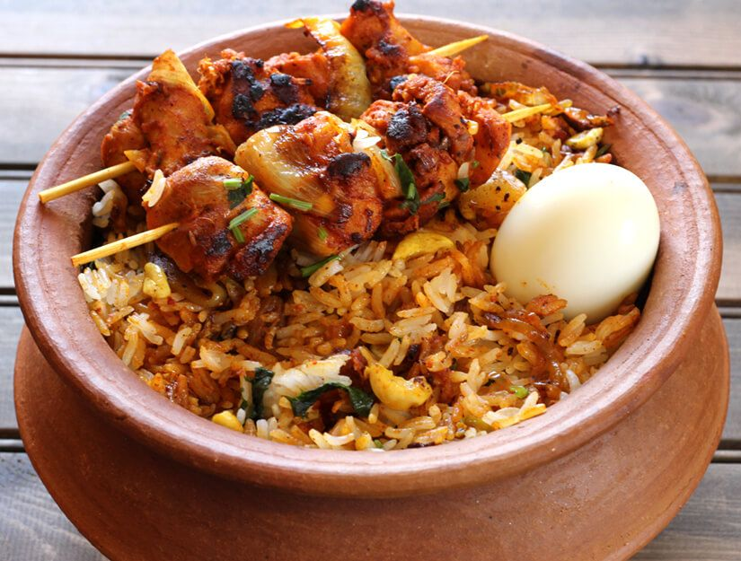

Dum Biryani Recipe

INGREDIENTS
For Dum biryani:
- 2 lbs - Chicken
- 2 lbs - Rice
- 6 oz pudina (mint) leaves
- 6 oz coriander (cilantro)
- 4 Onions
- 3 table spon of Ginger Garlic paste
- 1.5 table spon of chilli powder
- 1/2 table spon of Turmeric powder
- 3 table spon of Chicken masala (mixture of spices)
- 2 table spon of coriander powder
- 2 table spon of Garam Masala
- 3 to 4 biriyani leaves
- 8 oz yogurt
- 2 Lemon
HOW TO PREPARE
- Clean the chicken. Add chilli powder, coriander powder, ginger garlic paste, salt, turmeric powder, chicken masala and yogurt. Mix it and keep it aside for 30 mins.
- Add enough oil and fry finely chopped onions till golden brown colour. Remove the onions from oil. Reuse the oil for frying the marinated chicken.
- Take rice in a vessel, add garam masala, biryani leaves, salt, add water and cook it. Remove the mixture once it's half cooked.
- Fry the chicken. Add coriander and pudina leaves.
- Add half the boiled rice mixture and fried onions on top of the fried chicken. Add lime juice mixed with turmeric powder.
- Cook it in a medium heat for 30 mins.